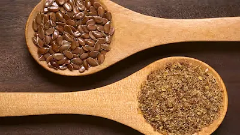

Élixirs naturels · 4 min de lecture
Élixir aux Graines de Lin Moulues : le rituel naturel pour la digestion, l’équilibre hormonal et la protection cellulaire

Introduction
Parfois, les remèdes les plus puissants sont aussi les plus simples.
Les graines de lin, utilisées depuis l’Antiquité, font partie de ces trésors nutritionnels discrets mais profondément efficaces lorsqu’elles sont bien préparées et correctement associées.
Riches en fibres, en oméga-3 et en composés protecteurs, les graines de lin moulues agissent comme un régulateur naturel du corps, notamment sur la digestion, l’inflammation, l’équilibre hormonal et la santé intestinale.
Dans cet article, je te présente un élixir naturel à base de graines de lin moulues, formulé avec une synergie d’ingrédients soigneusement choisis pour créer une alchimie optimale pour la santé, sans surcharge ni agression de l’organisme.
👉 Je tiens à vous rappeler une règle d’or que j’aime beaucoup et qui guide mes choix au quotidien : si la nature ne l’a pas créé, ne le buvez pas.
Le problème
De nombreuses personnes souffrent aujourd’hui de :
digestion lente ou inconfortable,
transit irrégulier,
inflammation silencieuse,
déséquilibres hormonaux,
fatigue liée à une mauvaise assimilation des nutriments.
Ces troubles sont souvent liés à un manque de fibres de qualité, de bons gras et à un microbiote intestinal affaibli.
Le corps ne demande pas plus de compléments…
Il demande un soutien alimentaire intelligent et fonctionnel.
La promesse
L’élixir aux graines de lin moulues agit comme un rééquilibrant digestif et hormonal naturel.
Il soutient le transit, nourrit la flore intestinale, protège les cellules et favorise une meilleure assimilation des nutriments, tout en douceur.
Ce n’est pas un laxatif.
C’est un rituel de fond, respectueux et durable.
Les bénéfices
Un transit plus régulier et confortable
Une digestion plus fluide
Un soutien naturel de l’équilibre hormonal
Une protection anti-inflammatoire et antioxydante
Une meilleure assimilation des nutriments
🌿 Pourquoi ce remède est efficace
Les graines de lin sont l’une des meilleures sources naturelles de :
fibres solubles et insolubles,
oméga-3 (ALA),
lignanes, des composés végétaux protecteurs.
⚠️ Point clé :
Les graines de lin doivent impérativement être moulues pour libérer leurs nutriments. Entières, elles traversent le système digestif sans être assimilées.
Une fois moulues et mises en contact avec un liquide, elles forment un gel naturel qui :
protège la muqueuse intestinale,
nourrit le microbiote,
ralentit l’absorption des sucres,
favorise un transit doux et régulier.
Associées à des ingrédients comme la pomme, la cannelle et le citron, elles deviennent plus digestes et encore plus efficaces.
💪 Les bienfaits de l’élixir aux graines de lin moulues
Soutien du transit intestinal
Les fibres facilitent l’élimination et nourrissent la flore intestinale.Équilibre hormonal naturel
Les lignanes participent à la régulation hormonale, notamment chez la femme.Action anti-inflammatoire
Les oméga-3 contribuent à réduire l’inflammation de bas grade.Protection cardiovasculaire
Les bons gras soutiennent la santé du cœur et de la circulation.Meilleure satiété et stabilité énergétique
Idéal pour éviter les fringales et les variations d’énergie.
🍎 La recette de l’Élixir Digestif & Équilibre aux Graines de Lin
Ingrédients (alchimie optimale)
1 cuillère à soupe de graines de lin fraîchement moulues
250 ml d’eau tiède
½ pomme râpée (avec la peau, si bio)
½ cuillère à café de cannelle
Un filet de jus de citron frais
Une pincée de gingembre en poudre (optionnelle)
Pourquoi cette synergie fonctionne ?
Le lin moulue nourrit et protège l’intestin.
La pomme apporte des fibres douces (pectine).
La cannelle stabilise la digestion et la glycémie.
Le citron stimule l’assimilation.
Le gingembre soutient le confort digestif.
Préparation
Mélange le lin moulue dans l’eau tiède.
Laisse reposer 10 à 15 minutes pour former le gel.
Ajoute la pomme râpée, la cannelle, le citron et le gingembre.
Mélange bien et consomme immédiatement.
⏰ Comment l’utiliser
À consommer 1 fois par jour, idéalement :
le matin à jeun,
ou le soir, loin des repas.
Peut être utilisé en cure de 2 à 4 semaines.
Bois suffisamment d’eau dans la journée pour accompagner l’action des fibres.
👥 À qui s’adresse ce rituel
Aux personnes ayant un transit lent ou irrégulier
À ceux qui souhaitent améliorer leur digestion naturellement
Aux personnes sujettes aux déséquilibres hormonaux
À ceux qui veulent soutenir leur santé intestinale
À toute personne cherchant un rituel simple, naturel et fonctionnel
⚠️ Précautions
Toujours utiliser des graines de lin fraîchement moulues.
Ne pas dépasser les doses recommandées.
Déconseillé en cas d’occlusion intestinale.
En cas de traitement hormonal ou médical, demander l’avis d’un professionnel de santé.
🌱 Conclusion & appel à l’action
L’élixir aux graines de lin moulues est une base solide de santé.
Il agit là où tout commence : l’intestin, l’assimilation, l’équilibre interne.
C’est un rituel humble, mais profondément efficace, qui rappelle que le bien-être durable repose sur des fondations simples et cohérentes.
👉 Si la nature ne l’a pas créé, ne le buvez pas.
Je partage régulièrement des élixirs, rituels et ressources bien-être pour t’aider à construire une santé stable, consciente et durable.
📚 Je suis auteur bien-être sous le pseudo Chest0 JM.S., mes ouvrages sont disponibles sur Amazon.
🔗 Retrouve tout mon univers ici :
👉 https://linktr.ee/Chest00
👉 Si tu veux aller plus loin, découvre aussi notre
Plus de 40 recettes d'élixirs dans les livres Chest0.
Voir les livres